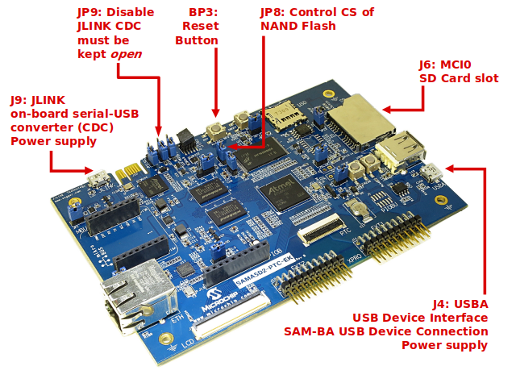
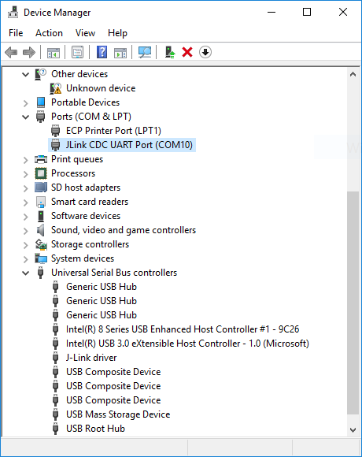

SAMA5D2 PTC EK Board
SoC Features
The SAMA5D2 series is a high-performance, ultra-low-power ARM Cortex-A5 processor based MPU. The Cortex A5 processor runs up to 500MHz and features the ARM NEON SIMD engine a 128kB L2 cache and a floating point unit. It supports multiple memories, including latest-generation technologies such as DDR3, LPDDR3, and QSPI Flash. It integrates powerful peripherals for connectivity (EMAC, USB, dual CAN, up to 10 UARTs, etc.) and user interface applications (TFT LCD controller, embedded capacitive touch controller, class D amplifier, audio PLL, CMOS sensor interface, etc.). The devices offer advanced security functions to protect customer code and secure external data transfers. These include ARM TrustZone, tamper detection, secure data storage, hardware encryption engines including private keys, on-the-fly decryption of code stored in external DDR or QSPI memory and a secure boot loader.
Kit Information
Kit Overview
|  |
Access the console
The usual serial communication parameters are115200 8-N-1 :
| Baud rate | 115200 |
| Data | 8 bits |
| Parity | None |
| Stop | 1 bit |
| Flow control | None |
Access the console on JLINK micro-A USB connector (J9)
The serial console can be accessed from the micro-A USB connector that gives access to the on-board serial-to-USB converter (marked as J9 JLINK). In fact, the ATSAM3U chip on the Evaluation Kit acts as a serial-to-USB converter and is loaded with a firmware that is able to talk USB-CDC protocol.- For Microsoft Windows users: Install the J-Link CDC USB driver
 . No need to install a driver on any regular Linux distribution.
. No need to install a driver on any regular Linux distribution.
- Connect the USB cable to the board (J9 JLINK)
- For Microsoft Windows users: identify the USB connection that is established
JLINK CDC UART Portshould appear in Device Manager. TheCOMxxnumber will be used to configure the terminal emulator.

- For Linux users: identify the USB connection by monitoring the last lines of
dmesgcommand. The/dev/ttyACMxnumber will be used to configure the terminal emulator:usb 1-1.2.2.4: new high-speed USB device number 33 using ehci-pci usb 1-1.2.2.4: config 1 interface 1 altsetting 0 bulk endpoint 0x83 has invalid maxpacket 64 usb 1-1.2.2.4: config 1 interface 1 altsetting 0 bulk endpoint 0x4 has invalid maxpacket 64 usb 1-1.2.2.4: New USB device found, idVendor=1366, idProduct=0105 usb 1-1.2.2.4: New USB device strings: Mfr=1, Product=2, SerialNumber=3 usb 1-1.2.2.4: Product: J-Link usb 1-1.2.2.4: Manufacturer: SEGGER usb 1-1.2.2.4: SerialNumber: 000483029109 cdc_acm 1-1.2.2.4:1.0: ttyACM0: USB ACM device
- For Microsoft Windows users: identify the USB connection that is established
- Now open your favorite terminal emulator with appropriate settings
Demo
Demo archives
| Media type | Board | Screen | Binary | Description |
|---|---|---|---|---|
| Yocto Project / Poky based demo | ||||
| NAND Flash | SAMA5D2 PTC EK | - | linux4sam-poky-sama5d2_ptc_ek-headless-2020.04.zip md5: d9e8ce468cecce4873b481e0f752b1a9 |
Linux4SAM Yocto Project / Poky based demo compiled from tag linux4sam-2020.04 Follow procedure: #Flash_the_demo |
| PDA5" (TM5000 or AC320005-5) |
linux4sam-poky-sama5d2_ptc_ek-graphics-2020.04.zip md5: 354ee5bff8434a633b8c679fb05b2e09 |
|||
| SD Card image | SAMA5D2 PTC EK | - | linux4sam-poky-sama5d2_ptc_ek-headless-2020.04.img.bz2 md5: b3fdedf1d9efa49573026b4bee124b61 |
Linux4SAM Yocto Project / Poky based demo compiled from tag linux4sam-2020.04 Follow procedure: #Create_a_SD_card_with_the_demo |
| PDA5" (TM5000 or AC320005-5) |
linux4sam-poky-sama5d2_ptc_ek-graphics-2020.04.img.bz2 md5: 5302e1086e0c68f9088c1281c01fceb2 |
|||
| BuildRoot based demo | ||||
| SD Card image | SAMA5D2 PTC EK | - | linux4sam-buildroot-sama5d2_ptc_ek-headless-2020.04.img.bz2 md5: 751c95ee86f12d4d069b3feb8ca2ec8b |
Linux4SAM BuildRoot based demo compiled from tag linux4sam-2020.04 Follow procedure: #Create_a_SD_card_with_the_demo |
| PDA5" (TM5000 or AC320005-5) |
linux4sam-buildroot-sama5d2_ptc_ek-graphics-2020.04.img.bz2 md5: b4032bdc89b519f2aa5cf148749af9e2 |
|||
Create a SD card with the demo
You need a 1 GB SD card (or more) and to download the image of the demo. The image is compressed to reduce the amount of data to download. This image contains:- a FAT32 partition with the AT91Bootstrap, U-Boot and the Linux Kernel (zImage and dtb).
- an EXT4 partition for the rootfs.
Multi-platform procedure
To write the compressed image on the SD card, you will have to download and install Etcher- Insert your SD card and launch
Etcher:
- Select the demo image. They are marked as "SD Card image" in the demo table above.
Note that you can select a compressed image (like the demos available here). The tool is able to uncompress files on the fly - Select the device corresponding to your SD card (Etcher proposes you the devices that are removable to avoid erasing your system disk)
- Click on the
Flash!button - On Linux, Etcher finally asks you to enter your root password because it needs access to the hardware (your SD card reader or USB to SD card converter)
- then the flashing process begins followed by a verification phase (optional)

- Once writing done, Etcher asks you if you want to burn another demo image:

- Your SD card is ready!
Flash the demo
Connect the USB to the board before launching SAM-BA
- Open the JP8 to prevents booting from NAND Flash by disabling Flash Chip Selects
- Connect a USB micro-A cable to the board (J4 USB-A). It powers the board
- check whether the board is found in your PC as a USB device:
- For Microsoft Windows users: verify that the USB connection is well established
AT91 USB to Serial Convertershould appear in Device Manager. If it shows a unknown device you need to download and install the driver: AT91SAM USB CDC driver

- For Linux users: check /dev/ttyACMx by monitoring the last lines of
dmesgcommand:
- For Microsoft Windows users: verify that the USB connection is well established
[172677.700868] usb 2-1.4.4: new full-speed USB device number 31 using ehci-pci
[172677.792677] usb 2-1.4.4: not running at top speed; connect to a high speed hub
[172677.793418] usb 2-1.4.4: New USB device found, idVendor=03eb, idProduct=6124
[172677.793424] usb 2-1.4.4: New USB device strings: Mfr=0, Product=0, SerialNumber=0
[172677.793897] cdc_acm 2-1.4.4:1.0: This device cannot do calls on its own. It is not a modem.
[172677.793924] cdc_acm 2-1.4.4:1.0: ttyACM0: USB ACM device
idVendor=03eb, idProduct=6124: from this message you can see it's Microchip board USB connection.
- Short the JP8 to allow access to the on-board Flash devices
Run script to flash the demo
- download the demo package for the board. They are marked as "Media type: NAND Flash" in the table above
- extract the demo package
- run your usual terminal emulator and enter the demo directory
- make sure that the
sam-baapplication is in your Operating System path so that you can reach it from your demo package directory - for Microsoft Windows users: Launch the
demo_linux_nandflash.batfile - for Linux users: Launch the
demo_linux_nandflash.shfile - this script runs SAM-BA 3 and the associated
QMLsam-ba script (demo_linux_nandflash_usb.qml) with proper parameters - when you reach the end of the flashing process (this will take a few minutes), the following line is written:
-I- === Done. ===
- connect a serial link on DBGU and open the terminal emulator program as explained just above
- power cycle the board
- monitor the system while it's booting on the LCD screen or through the serial line
Play with the PTC demos
For more details regarding the PTC demos, please see UsingPTC.Build From source code
Setup ARM Cross Compiler
- Ubuntu:
In Ubuntu, you can install the ARM Cross Compiler by doing:sudo apt-get install gcc-arm-linux-gnueabi export CROSS_COMPILE=arm-linux-gnueabi-
- Others:
For others, you can download the Linaro cross compiler and setup the environment by doing:wget -c https://releases.linaro.org/components/toolchain/binaries/7.3-2018.05/arm-linux-gnueabi/gcc-linaro-7.3.1-2018.05-x86_64_arm-linux-gnueabi.tar.xz tar xf gcc-linaro-7.3.1-2018.05-x86_64_arm-linux-gnueabi.tar.xz export CROSS_COMPILE=`pwd`/gcc-linaro-7.3.1-2018.05-x86_64_arm-linux-gnueabi/bin/arm-linux-gnueabi-
Build AT91Bootstrap from sources
This section describes how to get source code from the git repository, how to configure with the default configuration, how to customize AT91Bootstrap based on the default configuration and finally to build AT91Bootstrap to produce the binary. take the default configuration to download U-Boot from NandFlash for example.Get AT91Bootstrap Source Code
You can easily download AT91Bootstrap source code on the at91bootstrapTo get the source code, you should clone the repository by doing:
$ git clone git://github.com/linux4sam/at91bootstrap.git Cloning into 'at91bootstrap'... remote: Enumerating objects: 51, done. remote: Counting objects: 100% (51/51), done. remote: Compressing objects: 100% (32/32), done. remote: Total 10880 (delta 20), reused 39 (delta 19), pack-reused 10829 Receiving objects: 100% (10880/10880), 4.03 MiB | 395.00 KiB/s, done. Resolving deltas: 100% (8300/8300), done. $ cd at91bootstrap/
Configure AT91Bootstrap
Assuming you are at the AT91Bootstrap root directory, you will find aboard/sama5d2_ptc_ek folder which contains several default configuration files: sama5d2_ptc_eknf_uboot_defconfig sama5d2_ptc_eksd_uboot_defconfig
nf means to read nandflash, sd means to read mmc card. You can configure AT91Bootstrap to load U-Boot binary from SD Card by doing:
$ make mrproper $ make sama5d2_ptc_eksd_uboot_defconfigIf the configuring process is successful, the .config file can be found at AT91Bootstrap root directory.
Customize AT91Bootstrap
If the default configuration doesn't meet your need, after configuring with the default configuration, you can customize it by doing:$ make menuconfigNow, in the menuconfig dialog, you can easily add or remove some features to/from AT91Bootstrap as the same way as kernel configuration.
Move to
<Exit> with arrows and press this button hitting the Enter key to exit from this screen.
Build AT91Bootstrap
Then you can build the AT91Bootstrap binary by doing:$ makeIf the building process is successful, the final .bin image is binaries/at91bootstrap.bin.
Build U-Boot from sources
Getting U-Boot sources
Dedicated page on U-Boot wiki: http://www.denx.de/wiki/U-Boot/SourceCode- clone the Linux4sam GitHub U-Boot repository
$ git clone git://github.com/linux4sam/u-boot-at91.git Cloning into 'u-boot-at91'... remote: Enumerating objects: 106920, done. remote: Counting objects: 100% (106920/106920), done. remote: Compressing objects: 100% (24617/24617), done. remote: Total 566593 (delta 84756), reused 96342 (delta 81351), pack-reused 459673 Receiving objects: 100% (566593/566593), 131.67 MiB | 430.00 KiB/s, done. Resolving deltas: 100% (456142/456142), done. $ cd u-boot-at91
- The source code has been taken from the master branch which is pointing to the latest branch we use. If you want to use the other branch, you can list them and use one of them by doing:
$ git branch -r origin/HEAD -> origin/master origin/master origin/u-boot-2012.10-at91 origin/u-boot-2013.07-at91 origin/u-boot-2014.07-at91 origin/u-boot-2015.01-at91 origin/u-boot-2016.03-at91 origin/u-boot-2017.03-at91 origin/u-boot-2018.07-at91 origin/u-boot-2019.04-at91 origin/u-boot-2020.01-at91 origin/uboot_5series_1.x $ git checkout origin/u-boot-2020.01-at91 -b u-boot-2020.01-at91 Branch u-boot-2020.01-at91 set up to track remote branch u-boot-2020.01-at91 from origin. Switched to a new branch 'u-boot-2020.01-at91'
Cross-compiling U-Boot
Before compiling the U-Boot, you need setup cross compile toolchain in the section.configs/ to find the exact target when invoking make.
The U-Boot environment variables can be stored in different media, above config files can specify where to store the U-Boot environment.
# To put environment variables in nand flash: sama5d2_ptc_ek_nandflash_defconfig # To put environment variables in SD/MMC card: sama5d2_ptc_ek_mmc_defconfigHere are the building steps for the SAMA5D2-PTC-EK board:
# You can change the config according to your needs. make sama5d2_ptc_ek_mmc_defconfig makeThe result of these operations is a fresh U-Boot binary called
u-boot.bin corresponding to the binary ELF file u-boot. -
u-boot.binis the file you should store on the board -
u-bootis the ELF format binary file you may use to debug U-Boot through a JTag link for instance.
Build Kernel from sources
Getting Kernel sources
To get the source code, you have to clone the repository:$ git clone git://github.com/linux4sam/linux-at91.git Cloning into 'linux-at91'... remote: Enumerating objects: 50, done. remote: Counting objects: 100% (50/50), done. remote: Compressing objects: 100% (44/44), done. remote: Total 7282027 (delta 24), reused 17 (delta 6), pack-reused 7281977 Receiving objects: 100% (7282027/7282027), 2.09 GiB | 15.93 MiB/s, done. Resolving deltas: 100% (6114478/6114478), done. Checking out files: 100% (61813/61813), done. $ cd linux-at91The source code has been taken from the master branch which is pointing on the latest branch we use.
$ git remote add linux4sam git://github.com/linux4sam/linux-at91.git $ git remote update linux4sam Fetching linux4sam From git://github.com/linux4sam/linux-at91 * [new branch] linux-2.6.39-at91 -> linux4sam/linux-2.6.39-at91 * [new branch] linux-3.10-at91 -> linux4sam/linux-3.10-at91 * [new branch] linux-3.15-at91 -> linux4sam/linux-3.15-at91 * [new branch] linux-3.18-at91 -> linux4sam/linux-3.18-at91 * [new branch] linux-3.4.9-at91 -> linux4sam/linux-3.4.9-at91 * [new branch] linux-3.6.9-at91 -> linux4sam/linux-3.6.9-at91 * [new branch] linux-4.1-at91 -> linux4sam/linux-4.1-at91 * [new branch] linux-4.4-at91 -> linux4sam/linux-4.4-at91 * [new branch] linux-4.9-at91 -> linux4sam/linux-4.9-at91 * [new branch] linux-4.14-at91 -> linux4sam/linux-4.14-at91 * [new branch] linux-4.19-at91 -> linux4sam/linux-4.19-at91 * [new branch] linux-5.4-at91 -> linux4sam/linux-5.4-at91 * [new branch] master -> linux4sam/masterIf you want to use an other branch, you can list them and use one of them by doing this:
$ git branch -r origin/HEAD -> origin/master origin/linux-2.6.39-at91 origin/linux-3.10-at91 origin/linux-3.15-at91 origin/linux-3.18-at91 origin/linux-3.4.9-at91 origin/linux-3.6.9-at91 origin/linux-4.1-at91 origin/linux-4.4-at91 origin/linux-4.9-at91 origin/linux-4.14-at91 origin/linux-4.19-at91 origin/linux-5.4-at91 origin/master $ git checkout origin/linux-5.4-at91 -b linux-5.4-at91 Branch linux-5.4-at91 set up to track remote branch linux-5.4-at91 from origin. Switched to a new branch 'linux-5.4-at91'
Configure and Build the Linux kernel
Now you have to configure the Linux kernel according to your hardware. We have two default configuration at91 SoC inarch/arm/configs
arch/arm/configs/at91_dt_defconfig arch/arm/configs/sama5_defconfig
-
at91_dt_defconfig: for SAM9 (ARM926) series chips -
sama5_defconfig: for SAMA5 series chips
menuconfig
$ make ARCH=arm menuconfigNow, in the menuconfig dialog, you can easily add or remove some features. Once done, Move to
<Exit> with arrows and press this button hitting the Enter key to exit from this screen.
Build the Linux kernel image, before you build you need set up the cross compile toolchain, check this section.
$ make ARCH=arm [..] Kernel: arch/arm/boot/Image is ready Kernel: arch/arm/boot/zImage is readyNow you have an usable compressed kernel image
zImage.
If you need an uImage you can run this additional step:
make ARCH=arm uImage LOADADDR=0x20008000 [..] Kernel: arch/arm/boot/zImage is ready UIMAGE arch/arm/boot/uImage Image Name: Linux-4.1.0-linux4sam_5.3+ Created: Fri Sep 9 17:02:45 2016 Image Type: ARM Linux Kernel Image (uncompressed) Data Size: 3441072 Bytes = 3360.42 kB = 3.28 MB Load Address: 20008000 Entry Point: 20008000 Image arch/arm/boot/uImage is ready
make ARCH=arm dtbs [..] DTC arch/arm/boot/dts/at91-kizbox2.dtb DTC arch/arm/boot/dts/at91-nattis-2-natte-2.dtb DTC arch/arm/boot/dts/at91-sama5d27_som1_ek.dtb DTC arch/arm/boot/dts/at91-sama5d2_ptc_ek.dtb DTC arch/arm/boot/dts/at91-sama5d2_xplained.dtb DTC arch/arm/boot/dts/at91-sama5d3_xplained.dtb DTC arch/arm/boot/dts/at91-tse850-3.dtb DTC arch/arm/boot/dts/sama5d31ek.dtb DTC arch/arm/boot/dts/sama5d33ek.dtb DTC arch/arm/boot/dts/sama5d34ek.dtb DTC arch/arm/boot/dts/sama5d35ek.dtb DTC arch/arm/boot/dts/sama5d36ek.dtb DTC arch/arm/boot/dts/sama5d36ek_cmp.dtb DTC arch/arm/boot/dts/at91-sama5d4_ma5d4evk.dtb DTC arch/arm/boot/dts/at91-sama5d4_xplained.dtb DTC arch/arm/boot/dts/at91-sama5d4ek.dtb DTC arch/arm/boot/dts/at91-sama5d4ek_isi.dtb DTC arch/arm/boot/dts/at91-vinco.dtb [..]If the building process is successful, the final images can be found under arch/arm/boot/ directory.
Build Yocto/Poky rootfs from sources
Note that building an entire distribution is a long process. It also requires a big amount of free disk space. The support for Atmel AT91 SoC family is included in a particular Yocto layer:meta-atmel. The source for this layer are hosted on Linux4SAM GitHub accountBuilding environment
A step-by-step comprehensive installation is explained in the Yocto Project Quick StartPrerequisite
Here are the reference pages for setting up a Yocto building environment: What You Need and How You Get ItStep by step build procedure
meta-atmel layer. This file in the meta-atmel layer repository must be considered as the reference and the following copy can be out-of-sync.
Linux4SAM 2020.04 release, the meta-atmel layer supports Yocto templates, so make sure you create a new build environment using oe-init-build-env
This layer provides support for Microchip microprocessors (aka AT91)
====================================================================
For more information about the Microchip MPU product line see:
http://www.microchip.com/design-centers/32-bit-mpus
Linux & Open Source on Microchip microprocessors:
http://www.linux4sam.org
Supported SoCs / MACHINE names
==============================
Note that most of the machine names below, have a SD Card variant that can be
built by adding an "-sd" suffix to the machine name.
- SAMA5D2 product family / sama5d2-xplained, sama5d2-xplained-emmc, sama5d27-som1-ek-sd, sama5d2-ptc-ek, sama5d2-icp, sama5d27-wlsom1-ek-sd
- SAMA5D4 product family / sama5d4ek, sama5d4-xplained
- SAMA5D3 product family / sama5d3xek, sama5d3-xplained
- AT91SAM9x5 product family (AT91SAM9G15, AT91SAM9G25, AT91SAM9X25, AT91SAM9G35 and AT91SAM9X35) / at91sam9x5ek
- AT91SAM9RL / at91sam9rlek
- AT91SAM9G45 / at91sam9m10g45ek
- SAM9X60 / sam9x60ek
- SAMA7G5 / sama7g5ek-sd, sama7g5ek-emmc
Sources
=======
- meta-atmel
URI: git://github.com/linux4sam/meta-atmel.git
URI: https://github.com/linux4sam/meta-atmel.git
Branch: dunfell
Dependencies
============
This Layer depends on :
- poky
URI: git://git.yoctoproject.org/poky
Branch: dunfell
Tag: 861cfcd52f0b769772c3726530210f2f43c3449b
- meta-openembedded
URI: git://git.openembedded.org/meta-openembedded
URI: http://cgit.openembedded.org/meta-openembedded/
Branch: dunfell
Tag: f2d02cb71eaff8eb285a1997b30be52486c160ae
- meta-aws (for AWS Greengrass, mandatory for SAMA5D2 microchip-* images)
URI: git://github.com/aws/meta-aws.git
URI: https://github.com/aws/meta-aws
Branch: dunfell
Tag: e34ed15a87e36fa4199c63a184630fa370abac55
Build procedure
===============
0/ Create a directory
mkdir my_dir
cd my_dir
1/ Clone yocto/poky git repository with the proper branch ready
git clone git://git.yoctoproject.org/poky -b dunfell
2/ Clone meta-openembedded git repository with the proper branch ready
git clone git://git.openembedded.org/meta-openembedded -b dunfell
3/ Clone meta-aws git repository with the proper branch ready
git clone git://github.com/aws/meta-aws -b dunfell
4/ Clone meta-atmel layer with the proper branch ready
git clone git://github.com/linux4sam/meta-atmel.git -b dunfell
5/ Enter the poky directory to configure the build system and start the build process
cd poky
6/ Change TEMPLATECONF from .templateconf to:
export TEMPLATECONF=${TEMPLATECONF:-../meta-atmel/conf}
Note: If it's the first time you use Yocto Project templates, and if the
build-microchip directory remains from a previous use, we advice you start
from a fresh directory. Keep your build-microchip/conf/local.conf file for
reference.
7/ Initialize build directory
source oe-init-build-env build-microchip
8/ To build a small image provided by Yocto Project:
[MACHINE=] bitbake core-image-minimal
Example for sama5d2-xplained-sd SD card image:
MACHINE=sama5d2-xplained-sd bitbake core-image-minimal
9/ To build the microchip image with no graphics support:
[MACHINE=] bitbake microchip-headless-image
Example for sama5d2-xplained-sd SD card image:
MACHINE=sama5d2-xplained-sd bitbake microchip-headless-image
10/ To build the microchip image with graphics support (EGT):
[MACHINE=] bitbake microchip-graphics-image
Example for sama5d2-xplained-sd SD card image:
MACHINE=sama5d2-xplained-sd bitbake microchip-graphics-image
Typical bitbake output
======================
Build Configuration:
BB_VERSION = "1.46.0"
BUILD_SYS = "x86_64-linux"
NATIVELSBSTRING = "universal"
TARGET_SYS = "arm-poky-linux-gnueabi"
MACHINE = "sama5d2-xplained-sd"
DISTRO = "poky-atmel"
DISTRO_VERSION = "3.1.4"
TUNE_FEATURES = "arm vfp cortexa5 neon vfpv4 thumb callconvention-hard"
TARGET_FPU = "hard"
meta
meta-poky
meta-yocto-bsp = "dunfell:861cfcd52f0b769772c3726530210f2f43c3449b"
meta-oe
meta-networking
meta-python
meta-initramfs = "dunfell:f2d02cb71eaff8eb285a1997b30be52486c160ae"
meta-atmel = "dunfell:060a1d102176dbffdcd113d62585f728735811d3"
meta-multimedia = "dunfell:f2d02cb71eaff8eb285a1997b30be52486c160ae"
meta-aws = "dunfell:e34ed15a87e36fa4199c63a184630fa370abac55"
Contributing
============
To contribute to this layer you should submit the patches for review to:
the github pull-request facility directly or the forum. Anyway, don't forget to
Cc the maintainers.
AT91 Forum:
http://www.at91.com/discussions/
for some useful guidelines to be followed when submitting patches:
http://www.openembedded.org/wiki/How_to_submit_a_patch_to_OpenEmbedded
Maintainers:
Codrin Ciubotariu
Nicolas Ferre
When creating patches insert the [meta-atmel] tag in the subject, for example
use something like:
git format-patch -s --subject-prefix='meta-atmel][PATCH'
Using SAM-BA to flash components to board
NAND Flash demo - Memory map

Install SAM-BA software in your PC
In addition to the official SAM-BA pages on http://www.microchip.comLaunch SAM-BA tools
- According to this section make sure that the chip can execute the SAM-BA Monitor.
QML language for scripting used for flashing the demos, most common SAM-BA action can be done using SAM-BA command line.
For browsing information on the SAM-BA command line usage, please see the Command Line Documentation that is available in the SAM-BA installation directory: doc/index.html or doc/cmdline.html .
SAM-BA includes command line interface that provides support for the most common actions:
- reading / writing to arbitrary memory addresses and/or peripherals
- uploading applets and using them to erase/read/write external memories
The command line interface is designed to be self-documenting.
The main commands can be listed using the "sam-ba --help" command:
Usage: ./sam-ba [options] SAM-BA Command Line Tool Options: -v, --version Displays version information. -h, --help Displays this help. -x, --execute <script.qml> Execute script <script-file>. -p, --port <port[:options:...]> Communicate with device using <port>. -d, --device <device> Connected device is <device>. -b, --board <board> Connected board is <board>. -m, --monitor <command[:options:...]> Run monitor command <command>. -a, --applet <applet[:options:...]> Load and initialize applet <applet>. -c, --command <command[:args:...]> Run command <command>.
Additional help can be obtained for most commands by supplying a "help" parameter that will display their usage.
For example "sam-ba --port help" will display:
Known ports: j-link, serial
Command that take an argument with options (port, monitor, applet) will display even more documentation when called with "help" as option value.
For example "sam-ba --port serial:help" will display:
Syntax: serial:[<port>]:[<baudrate>] Examples: serial -> serial port (will use first AT91 USB if found otherwise first serial port) serial:COM80 -> serial port on COM80 serial:ttyUSB0:57600 -> serial port on /dev/ttyUSB0, baudrate 57600
Configure NAND ECC
Using default PMECC parameters
-b parameter of SAM-BA, the default PMECC configuration for the NAND populated on the board is valid. You can verify its value by running the command that reads one byte in a dummy file (named test.bin in the following command):
# sam-ba -p serial -b sama5d2-ptc-ek -a nandflash -c read:test.bin:0:1
Opening serial port 'ttyACM0'
Connection opened.
Detected memory size is 536870912 bytes.
Page size is 4096 bytes.
Buffer is 20480 bytes (5 pages) at address 0x0020a240.
NAND header value is 0xc1e04e07.
Supported erase block sizes: 256KB
Executing command 'read:test.bin:0:1'
Read 1 bytes at address 0x00000000 (100.00%)
Connection closed.
You can figure out that the default PMECC parameter for this sama5d2-ptc-ek board is 0xc1e04e07.
Applet 'NAND Flash' from softpack 2.10 (v2.10). Initializing NAND ioSet1 Bus Width 8 PMECC configuration: 0xc1e04e07 Sector size: 512 Sectors per page: 8 Spare size: 224 ECC bits: 8 ECC offset: 120 ECC size: 104 PMECC enabled Buffer Address: 0x0020a240 Buffer Size: 20480 bytes NAND applet initialized successfully.If you want to change the default PMECC parameters you can simply specify another value on the SAM-BA command line with the
-a nandflash argument as shown below:
# sam-ba -p serial -b sama5d2-ptc-ek -a nandflash:help
Syntax: nandflash:[<ioset>]:[<bus_width>]:[<header>]
Parameters:
ioset I/O set
bus_width NAND bus width (8/16)
header NAND header value
Examples:
nandflash use default board settings
nandflash:2:8:0xc0098da5 use fully custom settings (IOSET2, 8-bit bus, header is 0xc0098da5)
nandflash:::0xc0098da5 use default board settings but force header to 0xc0098da5
For information on NAND header values, please refer to SAMA5D4 datasheet section "12.4.4 Detailed Memory Boot Procedures".
By reading this in-line documentation we can specify the NAND PMECC parameter with this command:
# sam-ba -p serial -b sama5d2-ptc-ek -a nandflash:::0xc1e04e07 Opening serial port 'ttyACM0' Connection opened. Detected memory size is 536870912 bytes. Page size is 4096 bytes. Buffer is 20480 bytes (5 pages) at address 0x0020a240. NAND header value is 0xc1e04e07. Supported erase block sizes: 256KB Connection closed.
Programming components into NAND
Program AT91Bootstrap binary
Run SAM-BA with USB connection (equivalent toserial) and erase the beginning of the NAND flash and then write AT91Bootstrap binary:
# sam-ba -p serial -b sama5d2-ptc-ek -a nandflash -c erase::0x40000 -c writeboot:at91bootstrap-sama5d2_ptc_ek.bin Opening serial port 'ttyACM0' Connection opened. Detected memory size is 536870912 bytes. Page size is 4096 bytes. Buffer is 20480 bytes (5 pages) at address 0x0020a240. NAND header value is 0xc1e04e07. Supported erase block sizes: 256KB Executing command 'erase::0x40000' Erased 262144 bytes at address 0x00000000 (100.00%) Executing command 'writeboot:at91bootstrap-sama5d2_ptc_ek.bin' Prepended NAND header prefix (0xc1e04e07) Appending 4008 bytes of padding to fill the last written page Wrote 20480 bytes at address 0x00000000 (83.33%) Wrote 4096 bytes at address 0x00005000 (100.00%) Connection closed.
Program U-Boot binary
Run SAM-BA with USB connection (equivalent toserial) and erase the U-Boot section in the NAND flash memory map and then write U-Boot binary:
# sam-ba -p serial -b sama5d2-ptc-ek -a nandflash -c erase:0x40000:0x80000 -c write:u-boot-sama5d2-ptc-ek.bin:0x40000 Opening serial port 'ttyACM0' Connection opened. Detected memory size is 536870912 bytes. Page size is 4096 bytes. Buffer is 20480 bytes (5 pages) at address 0x0020a240. NAND header value is 0xc1e04e07. Supported erase block sizes: 256KB Executing command 'erase:0x40000:0x80000' Erased 262144 bytes at address 0x00040000 (50.00%) Erased 262144 bytes at address 0x00080000 (100.00%) Executing command 'write:u-boot-sama5d2-ptc-ek.bin:0x40000' Appending 3137 bytes of padding to fill the last written page Wrote 20480 bytes at address 0x00040000 (4.59%) Wrote 20480 bytes at address 0x00045000 (9.17%) Wrote 20480 bytes at address 0x0004a000 (13.76%) [..] Wrote 20480 bytes at address 0x00094000 (81.65%) Wrote 20480 bytes at address 0x00099000 (86.24%) Wrote 20480 bytes at address 0x0009e000 (90.83%) Wrote 20480 bytes at address 0x000a3000 (95.41%) Wrote 20480 bytes at address 0x000a8000 (100.00%) Connection closed.
Recent FAQ
- Sama5d2PtcEK
-
• Hasherrorwhenbooting FITimage: . (U-Boot)
• Using FITwith Overlays: How to use U-boot with FIT image to load overlays. (U-Boot, Kernel)
• Build Linux Ssl: Kernel Compilation Error related to OpenSSL. (Kernel)
• Connect Module From PDA: How to connect LCD module from PDA to the Boards. (Kernel)
• SDCard Boot Notice: How to boot up the board from SD card. (AT91Bootstrap)
• Using PTC: How to use PTC. (linux-4.9-at91, linux-4.14-at91, linux-4.19-at91, linux-5.4-at91)
• Using Max Touch: Introduction for how to use MaxTouch. (Kernel, linux-3.18-at91, linux-4.1-at91, linux-4.4-at91, linux-4.9-at91, linux-4.14-at91, linux-4.19-at91, linux-5.4-at91)
• Using SAMA 5 D 2 ADCDevice: Using the SAMA5D2-compatible ADC device. (Kernel, linux-4.1-at91, linux-4.4-at91, linux-4.9-at91, linux-4.14-at91, linux-4.19-at91, linux-5.4-at91)
• External Component On EBI: Connecting an external component on the External Bus Interface. (Kernel, linux-4.14-at91, linux-4.19-at91, linux-5.4-at91)
• Using Atmel DRMDriver: Using Atmel KMS/DRM LCD driver. (Kernel, linux-3.18-at91, linux-4.1-at91, linux-4.4-at91, linux-4.9-at91, linux-4.14-at91, linux-4.19-at91, linux-5.4-at91)
• Pwm Faq: PWM Driver. (Kernel, linux-3.10-at91, linux-3.18-at91, linux-4.1-at91, linux-4.4-at91, linux-4.9-at91, linux-4.14-at91, linux-4.19-at91, linux-5.4-at91)
• USBGadget Config: Configure AT91 USB Gadget on Linux and Endpoint order management (composite USB). (Kernel, linux-4.4-at91, linux-4.9-at91, linux-4.14-at91, linux-4.19-at91, linux-5.4-at91)
• Crypto Config: How to configure Crypto driver. (Kernel, linux-3.18-at91, linux-4.1-at91, linux-4.4-at91, linux-4.9-at91, linux-4.14-at91, linux-4.19-at91, linux-5.4-at91)
• Patching DTin Uboot: How to apply DTBOs in U-boot. (U-Boot, Kernel)
• U-Boot FAQ: Some U-Boot FAQ entries. (U-Boot)
• Using Ultra Low Power Mode 1: Using Ultra Low Power mode 1 (ULP1). (Kernel, linux-4.1-at91, linux-4.4-at91)